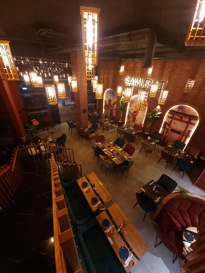
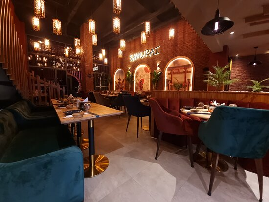

restaurat asiatique SAMURAI
Le restaurant samurai est un établissement culinaire qui propose une variété de plats et de saveurs provenant de différentes régions d'Asie. Ce restaurants est appréciés par la diversité des plats.
 Découvrez une aventure culinaire captivante au cœur de notre restaurant asiatique. Plongez dans une fusion enchanteresse de saveurs authentiques d'Asie, où chaque plat raconte une histoire de traditions millénaires et d'innovation contemporaine. Notre menu soigneusement élaboré vous invite à un voyage gustatif à travers les délices culinaires de la Chine, du Japon....
le restaurant propose une cuisine asiatique
| chinoise | oui |
| japonaise | oui |
| thäilandaise | oui |
| vietnamienne | oui |
.chinois proposent une grande variété de plats, allant des dumplings aux nouilles sautées en passant par le canard laqué.
.japonais offrent des sushis, sashimis, tempuras, ramens et autres plats japonais traditionnels. Ils sont également connus pour leur attention méticuleuse aux détails et à la présentation.
.haïlandais sont célèbres pour leurs plats épicés et aromatiques, comme le curry thaï, la soupe Tom Yum, et le pad thaï. La cuisine thaïlandaise est également connue pour son équilibre entre les saveurs sucrées, salées, amères et épicées.
.Restaurant vietnamien : La cuisine vietnamienne est caractérisée par des plats comme (soupe de nouilles), les rouleaux de printemps, . Elle met l'accent sur la fraîcheur des ingrédients et des herbes.